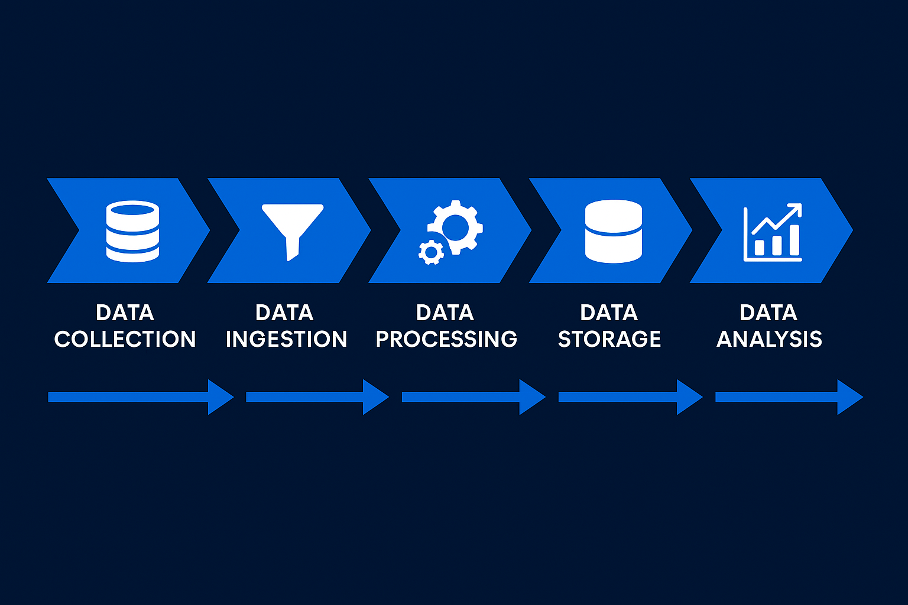

Pipelines reproducibles
Extracción, limpieza y validación con documentación para repetir y escalar.
Ver másConstruyo pipelines reproducibles, automatizo procesos y creo mapas temáticos que explican lo importante.
Información ordenada, procesos repetibles y visualizaciones que cuentan una historia.
EDA, métricas y calidad de datos para descubrir patrones y oportunidades accionables.
ETL con Pandas/NumPy, validaciones y exportes a Excel/TXT para reportes consistentes.
Mapas temáticos, geoprocesos y flujos automatizados con ArcGIS Pro y ArcPy.
Un vistazo rápido a lo que puedo implementar en tu proceso.
Cuéntame tu necesidad y definimos un flujo simple: de los datos al resultado.
Contactar